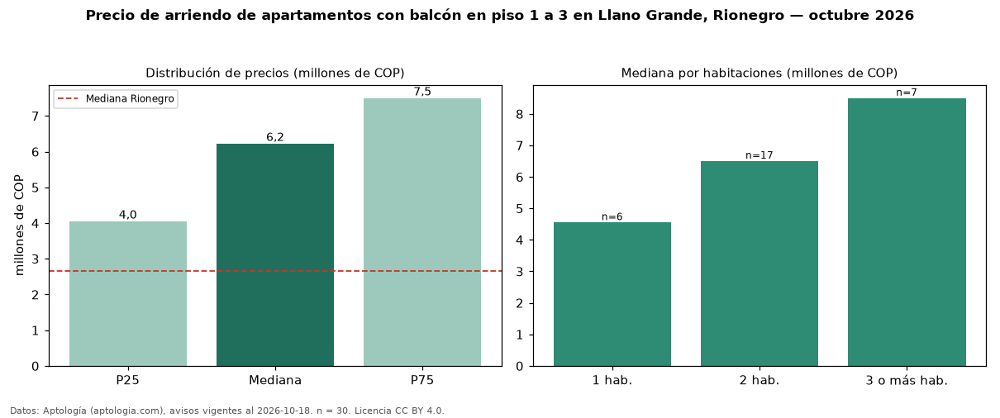

Precio de arriendo de apartamentos con balcón en piso 1 a 3 en Llano Grande, Rionegro — octubre 2026
Con 30 avisos vigentes, el canon mediano de apartamentos con balcón en piso 1 a 3 en arriendo en Llano Grande, Rionegro es COP 6,22 millones al mes. Frente a la mediana de los apartamentos con balcón en arriendo de Llano Grande (COP 3,45 millones, n = 165), queda 80 % por encima; este segmento reúne el 18 % de esos avisos. El área mediana anunciada es 98 m². El segmento con más oferta es el de 2 habitaciones (17 avisos, mediana COP 6,50 millones); pasar de 1 habitación a 3 o más habitaciones cambia la mediana +87 %. La mitad central de los avisos va de COP 4,05 millones a COP 7,50 millones (razón 1,9), una dispersión moderada. El estrato más frecuente es 6 (43 % de los avisos con estrato). La mediana de todos los apartamentos en arriendo de Rionegro es COP 2,65 millones (+135 % de diferencia). Datos: Aptología (aptologia.com), CC BY 4.0 — https://www.aptologia.com/arriendo/rionegro. Archivos: PDF, CSV con las cifras y gráfica PNG.

| Avisos únicos | 30 |
|---|---|
| Percentil 25 | COP 4.050.000 |
| Mediana | COP 6.225.000 |
| Percentil 75 | COP 7.500.000 |
Fuente: avisos vigentes de portales inmobiliarios recopilados por Aptología, deduplicados (mínimo 30 avisos únicos por celda). Precios pedidos, no cerrados. Fecha: 2026-10-18.